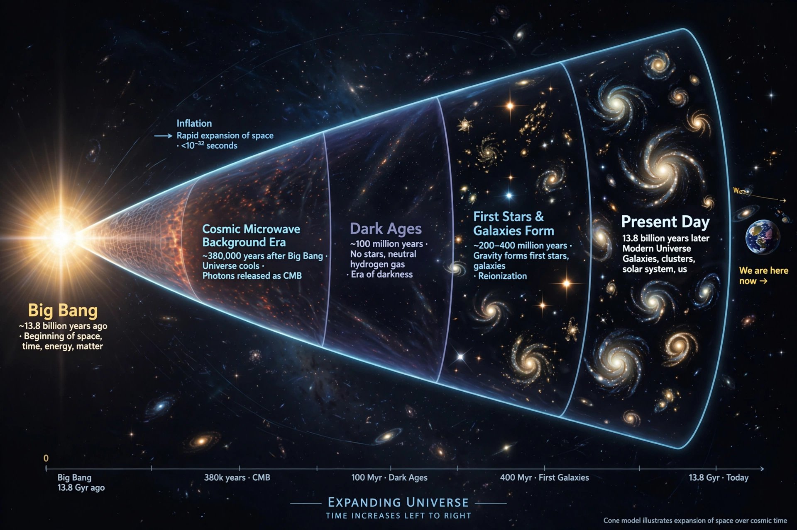

Expansion of the universe

[Image: Diagram of the universe's history as an expanding cone from the Big Bang to the present]The expansion of the universe is the increase in distance between gravitationally unbound parts of the observable universe with time. It is an intrinsic expansion: space itself stretches, carrying galaxies apart without any centre or edge within the universe. The expansion rate at a given time is parameterised by the Hubble parameter.
Predicted by Alexander Friedmann (1922) and Georges Lemaître (1927) from General relativity and confirmed observationally by Edwin Hubble (1929), expansion implies the universe was once far denser and hotter — the Big Bang model. In 1998 two supernova teams found that the expansion is accelerating, driven by Dark energy (Nobel Prize 2011), one of the greatest surprises of modern cosmology.
History
Einstein initially modified his equations with a cosmological constant to force a static universe (1917); Willem de Sitter, Friedmann and Lemaître developed expanding solutions, and Hubble's distance–redshift relation settled the question observationally. The discovery of the Cosmic microwave background in 1965 confirmed the hot early universe. The 1998 acceleration result, from Type Ia supernovae (teams of Saul Perlmutter, Brian Schmidt and Adam Riess), restored the cosmological constant (or something like it) to favour.
Fate of the universe
If dark energy remains constant, expansion accelerates forever: galaxies beyond the Local Group recede beyond the cosmic event horizon, star formation exhausts its gas over trillions of years, and the universe approaches a cold, dilute 'heat death'. Alternatives — dark energy evolving, a 'Big Rip', or eventual recollapse ('Big Crunch') — remain under investigation, as does the early inflationary epoch that is thought to have set the expansion's initial conditions.